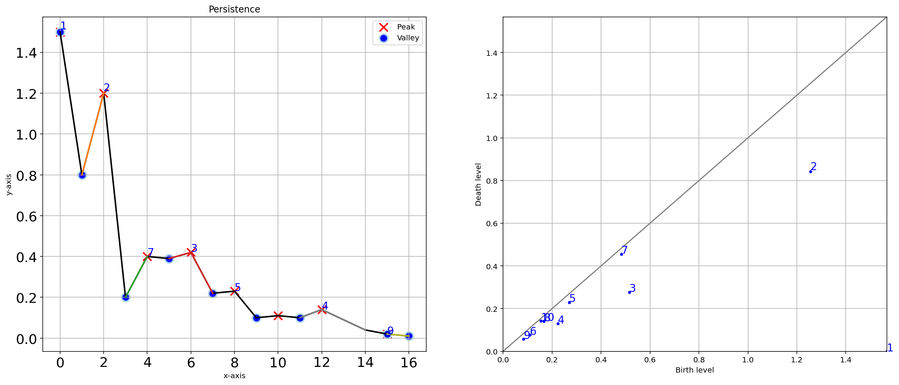

One-dimensional¶
Pre-processing¶
The pre-processing in a 1d-vector is based on the interpolation: function: findpeaks.utils.interpolate.interpolate_line1d()
# Import library
from findpeaks import findpeaks
# Initialize
fp = findpeaks(method='topology', interpolate=10)
# Import example
X = fp.import_example("1dpeaks")
# Detect peaks
results = fp.fit(X)
# Plot
fp.plot()
|
|


Persistence¶
The persistence plot is called with the function: findpeaks.findpeaks.findpeaks.plot_persistence(), and provides two plots.
The left is the detected peaks with the ranking of the peaks (1=best), and the right plot the homology-persitence plot. See section topology for more details.
# Plot
fp.plot_persistence()
 |
Two-dimensional¶
Pre-processing¶
The pre-processing plot is developed for 2D arrays (images) only: function: findpeaks.findpeaks.findpeaks.plot_preprocessing()
Depending on the number of user defined pre-processing steps, the plot will add new subplots.
# Import library
from findpeaks import findpeaks
# Initialize
fp = findpeaks(method='topology', scale=True, denoise='fastnl', window=3, togray=True, imsize=(300,300))
# Import example
X = fp.import_example("2dpeaks")
# Detect peaks
results = fp.fit(X)
# Plot
fp.plot_preprocessing()
|

Plot¶
- The plot function
findpeaks.findpeaks.findpeaks.plot()plots the 3 major steps: input data
final pre-processed image
peak detection.
# Plot
fp.plot()
|

Persistence¶
The persistence plot is called with the function: findpeaks.findpeaks.findpeaks.plot_persistence(), and provides two plots.
The left is the detected peaks with the ranking of the peaks (1=best), and the right plot the homology-persitence plot. See section topology for more details.
# Plot
fp.plot_persistence()
|

3D-mesh¶
The mesh plot can easily be created using the function: findpeaks.findpeaks.findpeaks.plot_mesh().
It converts the two image into a 3d mesh plot.
# Plot
fp.plot_mesh()
|